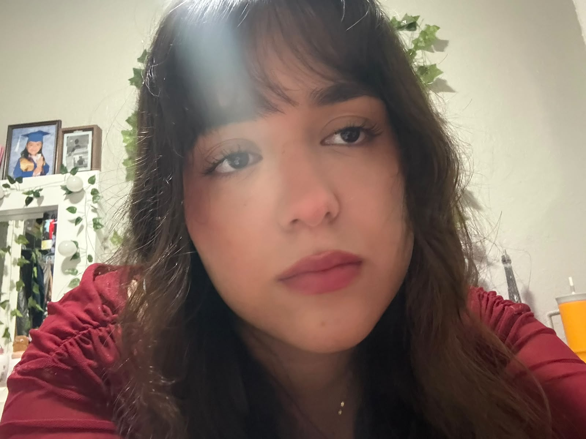

Nombre: Ximena Hernández Sandoval
Correo electrónico:Ximenahernandezs@icloud.com

Mi nombre es Ximena Hernández Sandoval, tengo 18 años, casi 19. Actualmente estudio en la Universidad Tecnológica de Ciudad Juárez (UTCJ) la carrera de Desarrollo de Software Multiplataforma. Elegí esta carrera porque me interesa aprender sobre tecnología, programación y la creación de diferentes tipos de aplicaciones y páginas web.
Me considero una persona alegre, aunque también puedo ser seria cuando es necesario. Una de las cosas que más me caracteriza es que trato de ser honesta con las personas y decir las cosas como son. También me considero responsable, creativa y atenta, especialmente cuando se trata de algo que me importa o de una meta que quiero cumplir.
En mi tiempo libre me gusta dibujar, jugar videojuegos, ver TikTok, escuchar música y hacer cosas que me entretienen. También disfruto aprender cosas nuevas, aunque algunas veces necesite practicarlas varias veces hasta entenderlas bien.
Actualmente una de mis prioridades es terminar mi carrera y seguir mejorando mis conocimientos en desarrollo de software. En el futuro me gustaría conseguir un buen trabajo relacionado con lo que estoy estudiando, obtener experiencia y poco a poco lograr una vida estable e independiente.
Invertiría mi dinero principalmente en comprar casas para rentarlas y así poder generar ingresos de manera constante.
Me gustaría visitar Corea porque me interesa su gastronomía y su cultura. También me gustaría conocer diferentes lugares turísticos y sus atracciones.
El lugar que menos me gustaría visitar sería India, ya que algunas de sus costumbres y su gastronomía son muy diferentes a mis gustos personales y no sería uno de mis principales destinos para viajar.
| Aspecto | Descripción |
|---|---|
| Meta profesional | Trabajar en el área de desarrollo de software |
| Meta personal | Tener estabilidad, una casa y formar una familia |
| Habilidades | Responsabilidad, honestidad, creatividad y atención |
Presiona el siguiente enlace para ver los ejercicios realizados durante la clase.
© 2026 Ximena Hernández Sandoval | Página Web Personal ♥